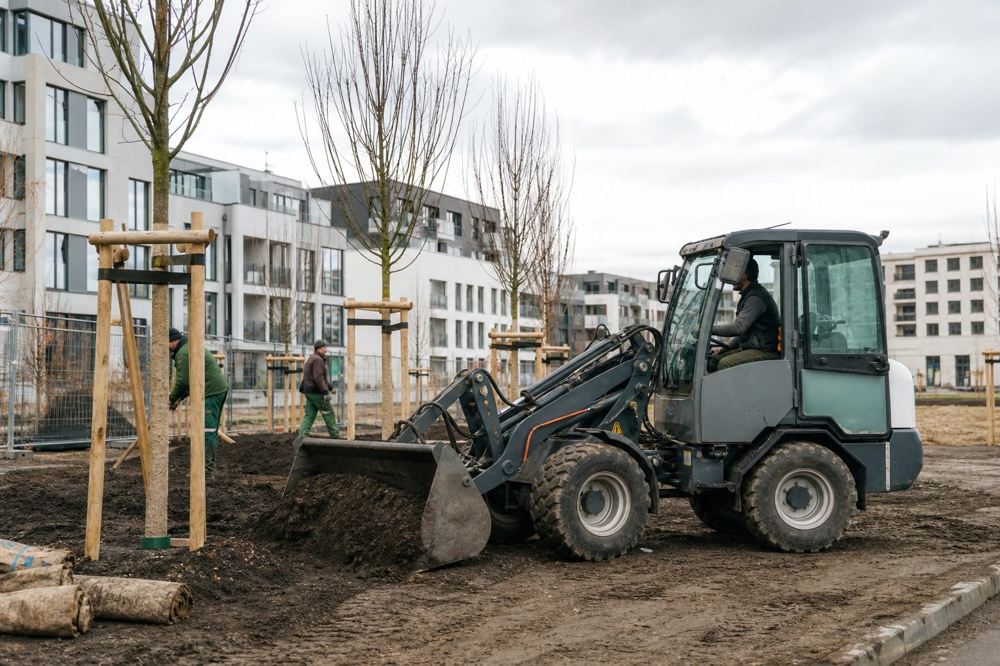

Ausgabe 01/2026: Was das Jahr bringt
Das Trendbarometer der Messe nennt drei Themen für 2026: Klimaanpassung, Fachkräfte, emissionsfreie Technik. Dazu drei Wege nach oben und nach draußen: die Meisterschule mit Aufstiegs-BAföG, die Motorsägenausbildung nach DGUV 214-059 und die neuen Wertgrenzen für öffentliche Aufträge. Und: wie Betriebe bei privaten Auftraggebern sichtbar werden.
In dieser Ausgabe
5 BeiträgeWie Privatkunden heute einen Gartenbauer finden – und warum die Bewertung mehr zählt als die Website
Der Auftrag für den neuen Garten beginnt in den meisten Fällen mit einer Suche auf dem Smartphone. Was Betriebe tun können, damit sie dort auftauchen, als seriös wahrgenommen werden und die Anfrage nicht im Postfach versickert.
Öffentliche Aufträge 2026: Neue EU-Schwellenwerte – und die Wertgrenzen, die für GaLaBau-Betriebe wirklich zählen
Seit dem 1. Januar gelten niedrigere EU-Schwellenwerte. Für die meisten Landschaftsbauaufträge entscheidet aber nicht Brüssel, sondern die VOB/A und die Erlasse der Länder, ob beschränkt oder freihändig vergeben wird.

Trendbarometer 2026: Klimaanpassung, Fachkräfte, emissionsfreie Technik
Die Messe Nürnberg hat ihr Trendbarometer zur GaLaBau 2026 veröffentlicht. Drei Themen setzen den Rahmen für das Messejahr – und für die Betriebe, die im September nach Nürnberg fahren.

Motorsäge: Welche Ausbildung Mitarbeiter brauchen – die Module der DGUV Information 214-059
Ohne nachgewiesene Ausbildung darf im Betrieb niemand die Kettensäge anwerfen. Was Modul A und Modul B vermitteln, wer sie braucht und was neben dem Schein zur Pflicht gehört.
Meister werden im GaLaBau: Weg, Prüfung, Kosten – und was das Aufstiegs-BAföG davon übernimmt
Der Gärtnermeister ist der klassische Aufstieg vom Facharbeiter zur Führungskraft. Wie die Vorbereitung organisiert ist, was die Prüfung verlangt und warum der Staat die Hälfte der Lehrgangskosten trägt.